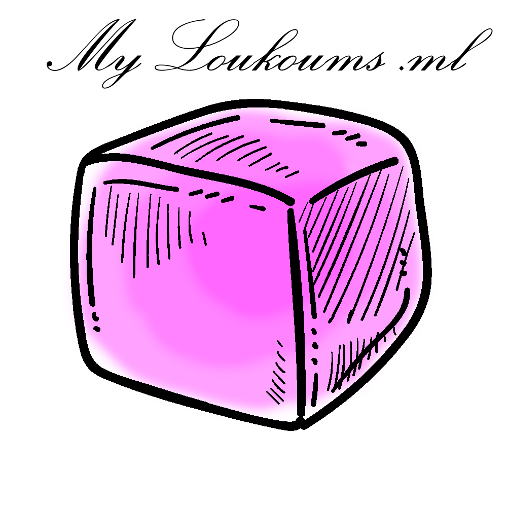
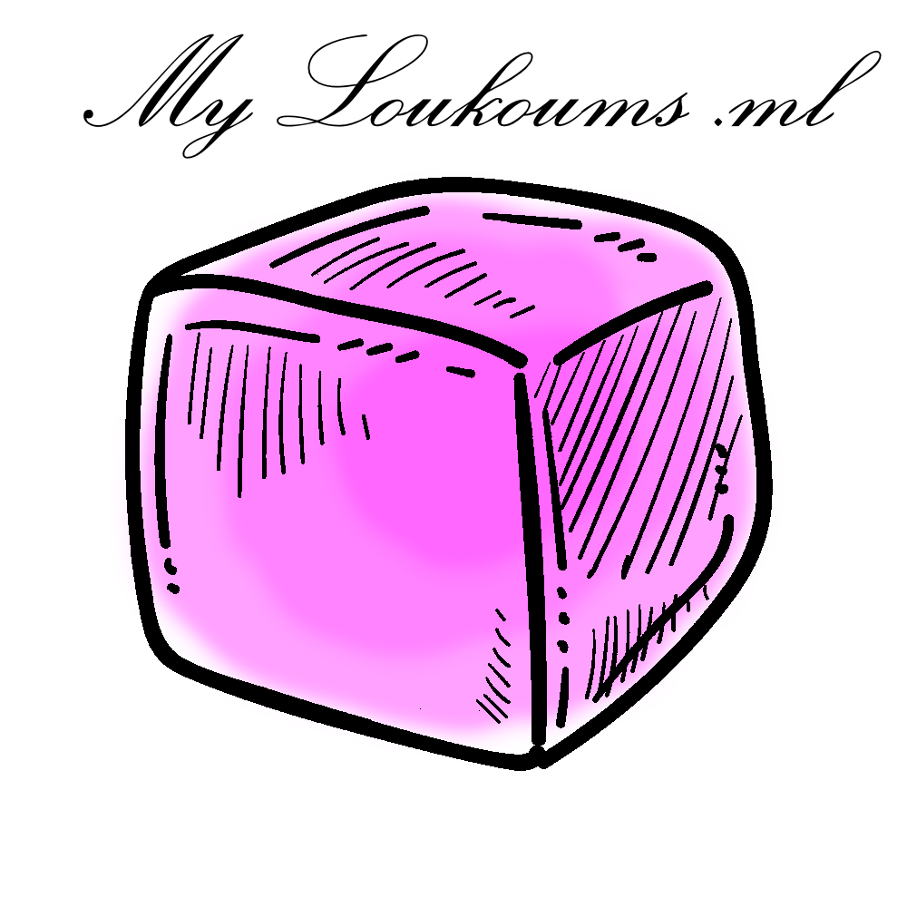

Accueil


Fondé par la famille Loukmous en 1980, MyLoukoums c’est avant tout le savoir-faire artisanal français au service du goût et de la créativité pour le plaisir des yeux et de vos papilles. C’est au Creusot,que la première boutique est né. Ce concept unique allie la qualité et la génorosité !
 

Les ingrédients qui composent votre plaisir caché ,répondent à l'exgence du luxe et bien plus ! Nous n’utilisons que des ingrédients issues de productions raisonnées et responsables. Aujourd’hui, le luxe n’est plus seulement une question de qualité et de savoir-faire. Le luxe doit être conscient du monde qui l’entoure.